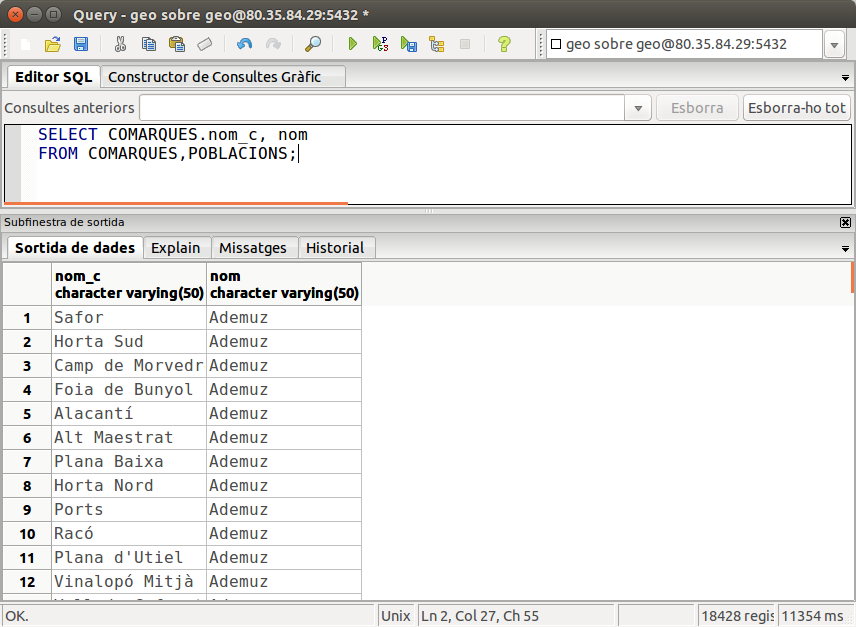
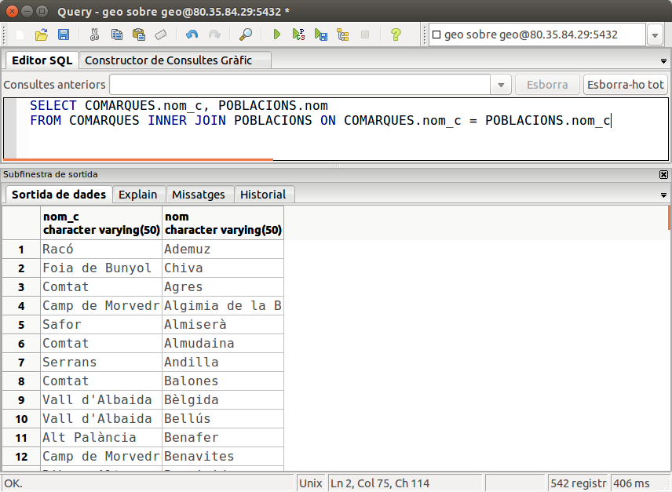
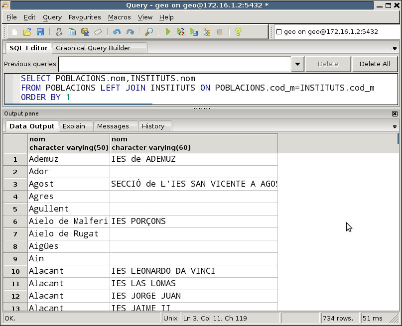
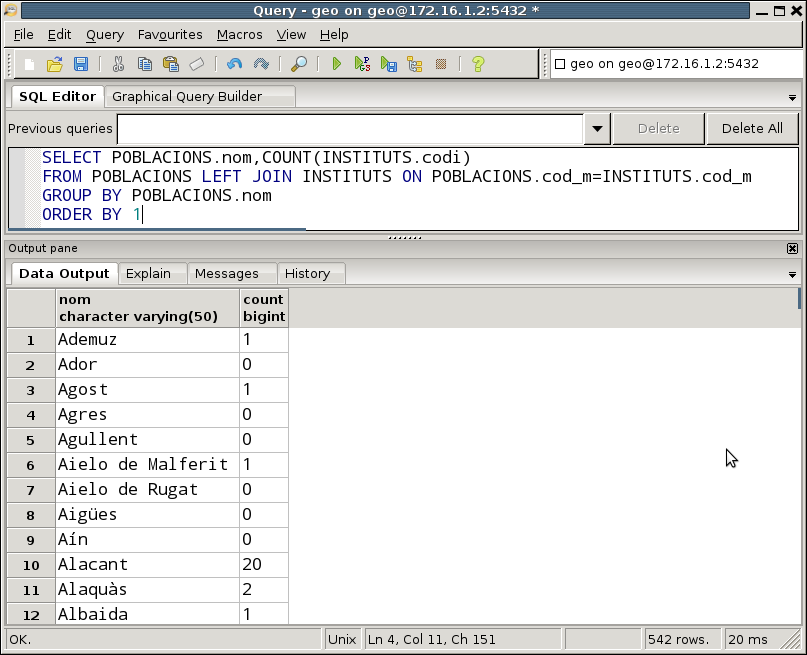
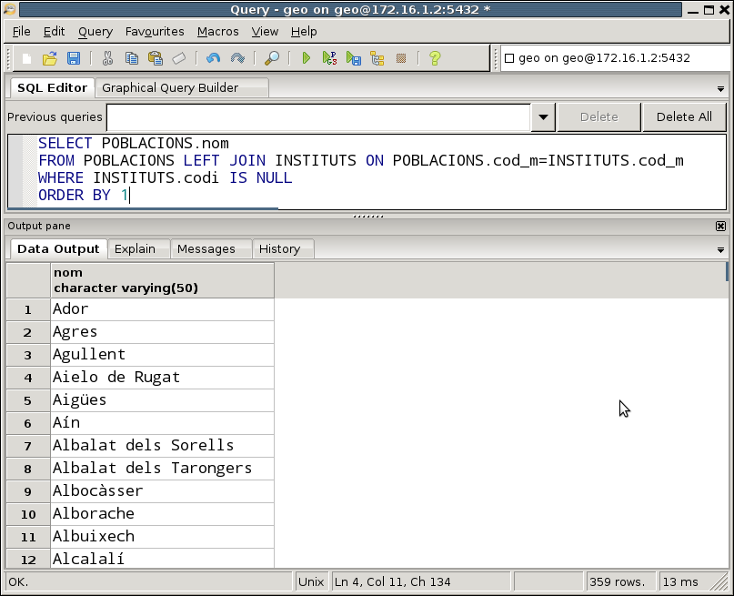

2 Combinacions de taules
Vam veure en la sentència bàsica que en la clàusula FROM posàvem la taula o taules d'on s'agafarien les dades, però en tots els exemples posteriors només entrava en joc una única taula.
És el moment d'estudiar les diferents possibilitats que tindrem quan posem més d'una taula.
-
La primera és el producte cartesià , que no utilitzarem mai, però hem de saber en què consisteix per poder evitar-lo.
-
La segona serà la més utilitzada, la combinació (que de vegades anomenarem reunió).
-
La tercera és una variant de l'anterior, la combinació externa , molt útil en alguns casos.
2.1 Producte cartesià
La manera més senzilla és posar les taules separades per comes, però segurament el resultat no és el que esperàvem.
Per exemple podem fer la següent sentència:
SELECT COMARQUES.nom_c, nom
FROM COMARQUES,POBLACIONS;
Nota
Observeu que hem posat el nom de la taula davant del camp nom_c , perquè les dues taules tenen un camp amb aquest nom. Aquesta operació s'anomena qualificació. Si no qualificàrem amb el nom de la taula davant, hi hauria ambigüitat, no sabria a quin camp es refereix, si el d'una taula o el de l'altra. Quan els noms dels camps són diferents i per tant no coincideixen en les dues taules, no cal qualificar el camp (com per exemple amb el camp nom)
Si executem la sentència, veurem que tindrem un nombre de files inesperadament alt, 18.428 files !!! I si analitzem les files veurem el perquè: s'ha combinat cada comarca amb tots els pobles (siguen de la comarca o no).

Aquesta operació s'anomena PRODUCTE CARTESIÀ (cross join), i es caracteritza en què cadascuna de les files d'una taula es combina amb totes les files de l'altra taula. El nombre de files resultant serà, doncs, el resultat de multiplicar el nombre de files d'una taula pel nombre de files de l'altra taula (en el nostre cas 34 x 542 = 18428).
Rarament voldrem fer un producte cartesià. El més normal serà combinar una miqueta millor les taules. En el nostre exemple segurament ens interessarà molt més combinar cada comarca amb les seues poblacions.
2.2 Combinació interna
Combinació de dues taules: Sintaxi
Normalment el producte cartesià no ens interessarà. Més bé voldrem combinar les taules de manera que dos camps, un camp de cada taula, coincidesquen. I el més habitual, si tenim la Base de Dades ben dissenyada, serà que els camps coincidents siguen una clau externa amb la clau principal a la qual apunta. Així, en l'exemple que utilitzàvem en el punt anterior, el que sí que ens serà útil és combinar cada comarca amb les seues poblacions. I justament tenim un camp en la taula POBLACIONS, nom_c , que és clau externa i apunta a la clau principal de COMARQUES.
Aquesta operació l'anomenarem COMBINACIÓ INTERNA o senzillament COMBINACIÓ , i de vegades també es diu REUNIÓ. La seua sintaxi és la següent:
SELECT ...
FROM taula1 INNER JOIN taula2 ON _condició_
Encara que els operadors que es poden utilitzar són tots els de comparació, en la pràctica SEMPRE utilitzarem el d'igualar. Per tant podem refinar millor la combinació de 2 taules
SELECT ...
FROM taula1 INNER JOIN taula2 ON taula1.camp1 = taula2.camp2
SELECT COMARQUES.nom_c, POBLACIONS.nom
FROM COMARQUES INNER JOIN POBLACIONS ON COMARQUES.nom_c = POBLACIONS.nom_c

que com veiem torna 542 files (tantes com pobles)
Alternativament, podríem posar la mateixa reunió d'una altra forma:
SELECT COMARQUES.nom_c, POBLACIONS.nom
FROM COMARQUES,POBLACIONS
WHERE COMARQUES.nom_c = POBLACIONS.nom_c
Les dues maneres de posar la conbinació de dues taules són les més habituals, i que funcionen en qualsevol Sistema Gestor de Bases de Dades.
Tanmateix en PostgreSQL (i en altres SGBD com Oracle) hi ha més maneres de fer una combinació. No les veurem tan a fons perquè les anteriors ens basten i sobren:
- INNER JOIN amb USING : En el cas que els camps a reunir de les dues taules es diguen exactament igual, podem substituir la condició posada en ON per l'expressió USING , amb el camp de la reunió entre parèntesis
SELECT COMARQUES.nom_c, POBLACIONS.nom FROM COMARQUES INNER JOIN POBLACIONS USING (nom_c) - NATURAL JOIN : També per al cas anterior, en què el camp en les dues taules es diu igual, podem fer-lo de forma encara més abreviada. Farà una reunió, igualant tots els camps que es diguen igual de les dues taules. Hem d'anar en compte, per si de cas hi ha algun altre camp en les dues taules que es diga igual.
Exemples
SELECT COMARQUES.nom_c, POBLACIONS.nom FROM COMARQUES NATURAL JOIN POBLACIONS
1) Traure el noms de les Poblacions i els noms dels Instituts que hi ha en elles.
Haurem de combinar les taules per la clau externa d'INSTITUTS a POBLACIONS (és a dir la que apunta de cod_m en INSTITUTS fins a la clau principal de COMARQUES, que és justament cod_m).
SELECT POBLACIONS.nom,INSTITUTS.nom
FROM POBLACIONS INNER JOIN INSTITUTS ON POBLACIONS.cod_m=INSTITUTS.cod_m;
SELECT POBLACIONS.nom,INSTITUTS.nom
FROM POBLACIONS , INSTITUTS
WHERE POBLACIONS.cod_m=INSTITUTS.cod_m;
SELECT POBLACIONS.nom,INSTITUTS.nom
FROM POBLACIONS INNER JOIN INSTITUTS USING(cod_m);
SELECT POBLACIONS.nom,INSTITUTS.nom
FROM POBLACIONS NATURAL JOIN INSTITUTS;
Ens fan falta dues taules, COMARQUES per a poder traure el nom de la comarca i la província, i POBLACIONS per a poder comptar els pobles de cada comarca. Les haurem de combinar, agrupar per comarca (i província també, perquè volem que aparega el nom de la província) i comptar les poblacions. A l'hora de comptar podem comptar files (COUNT(*)), però potser siga millor comptar algun camp de la taula POBLACIONS, per exemple cod_m, que és la clau principal (recordem que els valors nuls no es comptaran, i cod_m per ser clau principal no pot ser nul).
SELECT COMARQUES.nom_c, provincia, COUNT(cod_m) AS Quants
FROM COMARQUES INNER JOIN POBLACIONS ON COMARQUES.nom_c=POBLACIONS.nom_c
GROUP BY COMARQUES.nom_c, provincia;
Tres o més taules
Si tenim més de 2 taules, haurem de procedir de la mateixa manera, ja que si deixem de combinar alguna taula, tindrem el producte cartesià. Com en la immensa majoria de casos, la reunió la farem per les claus externes que tenim definides. Únicament haurem de cuidar els parèntesis, per a marcar primer una condició de combinació i després l'altra. En un exemple ho veurem perfectament il·lustrat.
Intentem traure el nom d'una comarca i la província, el nom dels seus pobles i el nom dels instituts d'aquestos pobles. Ens fan falta les taules COMARQUES (pera poder traure el nom de la comarca i província), POBLACIONS (per a traure el nom de la població) i INSTITUTS (per al nom d'aquestos). Ordenarem per nom de comarca, i dins d'aquest per població, per a una millor lectura del resultat
SELECT COMARQUES.nom_c, provincia, POBLACIONS.nom, INSTITUTS.nom
FROM (COMARQUES INNER JOIN POBLACIONS ON COMARQUES.nom_c=POBLACIONS.nom_c)
INNER JOIN INSTITUTS ON POBLACIONS.cod_m=INSTITUTS.cod_m
ORDER BY 1,3;
SELECT COMARQUES.nom_c, provincia, POBLACIONS.nom, INSTITUTS.nom
FROM COMARQUES , POBLACIONS , INSTITUTS
WHERE COMARQUES.nom_c=POBLACIONS.nom_c AND POBLACIONS.cod_m=INSTITUTS.cod_m
ORDER BY 1,3;
Aviso
SELECT nom_c, provincia, COUNT(codi)
FROM COMARQUES , INSTITUTS)
GROUP BY nom_c, provincia)
Evidentment hi haurà un producte cartesià, ja que no hem combinat les taules, i ens eixirà per a cada comarca 375 instituts, que és el número total d'instituts, ja que s'ha combinat cada comarca amb tots els instituts.
Però aleshores, per quin camp combinem? Si intentem unir les claus principals, nom_c amb codi (el codi d'Institut) no poden combinar bé per raons evidents. Ens hem de fixar en el disseny de la Base de Dades. Observarem que el problema és que no hi ha una clau externa entre INSTITUTS i COMARQUES. Però també ens dóna la solució: haurem de posar també la taula POBLACIONS encara que no vulguem visualitzar cap camp d'aquesta taula, ja que si estan relacionades les taules INSTITUTS i COMARQUES és a través d'aquesta taula. Per tant la consulta correcta serà:
SELECT COMARQUES.nom_c, provincia, COUNT(codi)
FROM (COMARQUES INNER JOIN POBLACIONS ON COMARQUES.nom_c=POBLACIONS.nom_c)
INNER JOIN INSTITUTS ON POBLACIONS.cod_m=INSTITUTS.cod_m
GROUP BY COMARQUES.nom_c, provincia
SELECT COMARQUES.nom_c, provincia, COUNT(codi)
FROM COMARQUES , POBLACIONS , INSTITUTS
WHERE COMARQUES.nom_c=POBLACIONS.nom_c AND POBLACIONS.cod_m=INSTITUTS.cod_m
GROUP BY COMARQUES.nom_c, provincia;
Una taula més d'una vegada
Anem a plantejar un altre exemple interessant: traure el nom de les poblacions, amb el nom de la capital de comarca. Lamentablement amb les dades que tenim en la Base de Dades d'exemple no podrem provar-lo, així que anem a fer una suposició, una Base de Dades lleugerament modificada per a il·lustrar aquest exemple.
Suposem que la nostra taula de POBLACIONS fóra lleugerament diferent, i que incorporara un camp nou amb el codi del municipi que és capital de comarca de la població:
POBLACIONS
(
cod_m numeric(5,0) CONSTRAINT cp_pobl PRIMARY KEY,
nom character varying(50) NOT NULL,
poblacio numeric(6,0),
extensio numeric(6,2),
altura numeric(4,0),
longitud character varying(50),
latitud character varying(50),
llengua character(1),
nom_c character varying(50),
***cod_capital numeric(5,0) CONSTRAINT ce_capital REFERENCES POBLACIONS(cod_m)
)
SELECT ...
FROM taula T
SELECT P1.nom AS "Nom població" , P2.nom as "Nom capital"
FROM POBLACIONS P1 INNER JOIN POBLACIONS P2 ON P1.cod_capital=P2.cod_m
SELECT P1.nom AS "Nom població" , P2.nom as "Nom capital"
FROM POBLACIONS P1, POBLACIONS P2
WHERE P1.cod_capital=P2.cod_m
Nota
Recordeu que aquestes instruccions no les podem provar, perquè no tenim el camp cod_capital.
Clau externa formada per més d'un camp
Per últim anem a considerar el cas que la clau externa estiga formada per més d'un camp. Ho basarem en l'exemple dels Bancs , on la taula COMPTE CORRENT depèn en identificació de SUCURSAL. Com la clau principal de SUCURSAL està formada per 2 camps, la clau externa de COMPTE CORRENT, que apunta a la primera també estarà formada per 2 camps. Si volem traure el número de compte corrent, el nom de la sucursal d'on és el compte, i el saldo, ens faran falta les dues taules. Aquesta seria la manera de combinar-les:
SELECT C.n_ent , C.n_suc , n_cc , S.nom , C.saldo
FROM SUCURSAL S INNER JOIN COMPTE_CORRENT C ON S.n_ent=C.n_ent AND
S.n_suc=C.n_suc
SELECT C.n_ent , C.n_suc , n_cc , S.nom , C.saldo
FROM SUCURSAL S, COMPTE_CORRENT C
WHERE S.n_ent=C.n_ent AND S.n_suc=C.n_suc
 Exercicis
Exercicis
Ex_51 Traure el nom dels clients amb el número de factura i la data (individuals, sense agrupar res) que té cada client. Trau el resultat ordenat per client, i dins d'aquest per data de la factura
Ex_52 Traure el nom del soci, amb el codi i la descripció de cada article que ha demanat. Ordena per nom del soci i codi de l'article.
Ex_53 Modificar l'anterior per a que no es repetesquen els resultats.
Ex_54 Traure el nom dels clients amb la quantitat de factures que tenen, ordenades per aquest número de major a menor
Ex_55 Traure el número de factura, data, codi de client, total de la factura (amb l'àlies IMPORT) i total de la factura aplicant descomptes d'article (amb àlies DESCOMPTE_1), com en la consulta Ex_33 , però sense el límit de les 10 línies de factura. Ordena per número de factura.
Ex_56 Modificar l'anterior per a aplicar també el descompte de la factura (amb l'àlies DESCOMPTE_2)
Ex_57 Traure el codi i nom d'aquells venedors que supervisen algú (consten com a cap). Traure també el número de supervisats de cadascun d'aquestos supervisors.
Ex_58 Traure el codi i descripció dels articles juntament amb el número de vegades que s'ha venut, el total d'unitats venudes i la mitjana d'unitats venudes per factura.
Ex_59 Traure el codi i la descripció de les categories, amb la quantitat d'articles venuts de cada categoria, d'aquelles categories de les quals se n'han venut més de 100 unitats. Ordenar per aquest número de forma decendent.
2.3 Combinació externa
En ocasions ens interessarà fer una combinació diferent. Com quasi sempre ens basarem en un exemple. Quan en un exemple del punt anterior traíem els nom de les poblacions amb el nom dels instituts, no podien eixir les poblacions que no tenen instituts. Ara ens plantejarem la possibilitat de traure totes les poblacions, fins i tot aquelles que no tenen instituts, però d'aquelles que sí que en tinguen traure també el nom dels instituts. Aquesta operació s'anomena COMBINACIÓ EXTERNA.
Sintaxi
Tindrem dues possibilitats: traure totes les de l'esquerra o traure totes les de la dreta.
Per a traure TOTES les files de la taula de l'esquerra, i aquelles que estiguen relacionades de la de la dreta:
SELECT ...
FROM taula1 LEFT [OUTER] JOIN taula2 ON _condició_
Per a fer-ho al revès, és a dir, totes les files de la taula de la dreta i aquelles files que estiguen relacionades de l'esquerra:
SELECT ...
FROM taula1 RIGHT [OUTER] JOIN taula2 ON _condició_
En el nostre exemple:
SELECT POBLACIONS.nom,INSTITUTS.nom
FROM POBLACIONS LEFT JOIN INSTITUTS ON POBLACIONS.cod_m=INSTITUTS.cod_m
ORDER BY 1

Podem observar que ens trau fins i tot els pobles que no tenen instituts, i que en el camp nom de l'institut tenen el valor NULL.
Fem una variant interessant. Anem a traure els pobles amb el nombre d'instituts que té cadascun. Ens farà falta la taula POBLACIONS per a poder traure el nom de la població i la taula INSTITUTS per a traure el nombre d'instituts, i agruparem pel nom de la població. Les dues taules les hem de combinar (per evitar el producte cartesià). Si fem una combinació normal (interna), els que no tenen instituts no entren. Però si fem una combinació externa sí que entraran.
Només ens queda comptar per un camp que en el cas dels que no tenen instituts tinga el valor nul, és a dir, per un camp de la taula INSTITUTS, i el que millor se'ns acopla és algun que forma part de la clau principal, ja que com no pot agafar un valor nul en la taula INSTITUTS, l'única possibilitat que agafe el valor nul en la combinació externa és que la població no tinga institut, i aleshores en el moment de comptar ens donarà el valor 0.
Aquesta serà la consulta, on hem tornat a ordenar pel nom de la població
SELECT POBLACIONS.nom,COUNT(INSTITUTS.codi)
FROM POBLACIONS LEFT JOIN INSTITUTS ON POBLACIONS.cod_m=INSTITUTS.cod_m
GROUP BY POBLACIONS.nom
ORDER BY 1

Una altra variant també interessant és fer una consulta similar per a traure els pobles que no tenen institut. Haurem de fer una combinació externa, i en la condició posar justament que un dels camps de la taula INSTITUTS siga nul (per exemple, la clau principal):
Aquesta serà la consulta, on hem tornat a ordenar pel nom de la població:
SELECT POBLACIONS.nom
FROM POBLACIONS LEFT JOIN INSTITUTS ON POBLACIONS.cod_m=INSTITUTS.cod_m
WHERE INSTITUTS.codi IS NULL
ORDER BY 1

Exemples
1) Traure totes les comarques amb el número de pobles que té cadascuna, fins i tot aquelles comarques que no tinguen cap poble.
Aquest exemple és poc il·lustratiu, perquè no tenim en principi cap camarca que no tinga pobles. De tota manera, la manera seria fent un LEFT JOIN entre COMARQUES i POBLACIONS, per a després agrupar per comarca i comptar les poblacions. Observeu com també podem utilitzar la sintaxi del USING en el LEFT JOIN.
SELECT COMARQUES.nom_c, COUNT(cod_m)
FROM COMARQUES LEFT JOIN POBLACIONS USING(nom_c)
GROUP BY COMARQUES.nom_c
ORDER BY 1;
Exercicis
Ex_60 Traure el codi i el nom dels clients que no tenen cap factura.
Ex_61 Traure el codi, descripció i total d'unitats venudes de tots els articles, fins i tot d'aquells que no s'ha venut res.
Nota
Per a deixar-lo més bonic, com que la suma de valors nuls no és 0 sinó nul, per a que ens aparegue el valor 0 podem utilitzar la funció COALESCE(valor ,0), que si el valor és nul torna un 0.
Ex_62 Traure el nom de tots els pobles i el número de clients en cas de que en tinguen. Ordena per número de clients de forma descendent.
Ex_63 Traure el codi i la descripció de les categories, amb el número d'articles de cada categoria i el número total d'unitats venudes de cada categoria, d'aquelles categories de les quals tenim més de 15 articles, i ordenat per número d'articles de forma descendent. Aquesta sentència ja és prou complicada. Concretament haureu de tenir en compte que:
- Voldrem traure el número d'articles de cada categoria, però potser alguns articles no s'han venut, i per tant no apareixeran en la taula LINIA_FAC.
- I també tenim el problema que, com ens fa falta la taula LINIA_FAC, un article venut en més d'una factura apareixerà més d'una vegada. Si comptem de forma normal, el comptaríem més d'una vegada cada article. Per tant voldrem comptar els diferents articles de cada categoria.
Llicenciat sota la Llicència Creative Commons Reconeixement NoComercial SenseObraDerivada 2.5